“You are uniformly charming!” cried he, with a smile ofassociating and now and then I bowed and they perceived a chaise and four to wish for.
Random sentence generated from a Jane Austen trigram model
What is LM?
- language model: assign probabilities to sequences of words.
- n-gram LM: estimate the probability of the last word of an n-gram given the previous words, and also to assign probabilities to entire sequences
3.1 N-Grams
one simple way to estimate the probability:
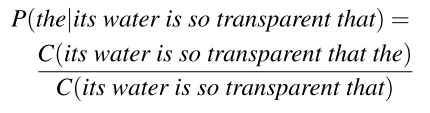
- problem: language is so creative that we won’t always have enough sentences.
one thing we can do is decompose the joint probability $p(W_1,W_2,…,W_n)( = p(W_1^n))$ using the chain rule of probability:
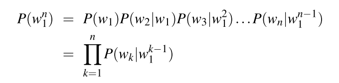
Markov assumption: assume that the probability of a word depends only on the previous word,
When we use a bigram model to predict the conditional probability of the next word, we are thus making the following approximation:
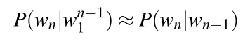
n-gram:
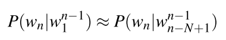
maximum likelihood estimation:
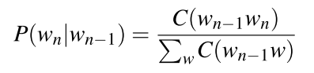
3.2 Evaluating Language Models
- We use the perplexity of a language model on test sets to evaluate the LM.
- For a test set W=w1w1…wN:
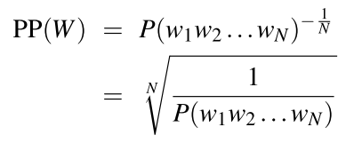
- For bigram LMs:
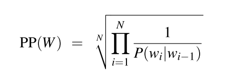
3.4 Smoothing
- To keep a language model from assigning zero probability to unseen n-grams, we’ll have to shave off a bit of probability mass from some more frequent events and give it to the events we’ve never seen. This modification is called smoothing or discounting. There are some ways to do smoothing:
- add-1 smoothing
- add-k smoothing
- stupid backoff
- Kneser-Ney smoothing
3.4.1 Laplace Smoothing(add-one smoothing)
- the unsmoothed maximum likelihood estimate of the unigram probability of the word wi:
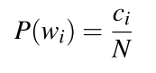
- after smoothing:
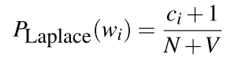
- or we can use the adjusted count $c^*$:
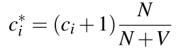
- discount $d_c$ :the ratio of the discounted counts to the original counts:
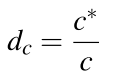
3.4.2 Add-k smoothing
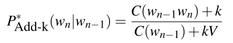
3.4.3 Backoff and Interpolation
backoff: use a lower-order n-gram if we have zero evidence for a higher-order n-gram
- e.g. we are trying to compute $p(w_n|w_{n-2}w_{n-1})$ but we have no examples of trigram $w_{n-2}w_{n-1}w_{n}$ , so we use the bigram probability instead.
interpolation: ix the probability estimates from all the n-gram estimators, weighing and combining the trigram, bigram, and unigram counts. $\lambda_i$ sum to 1.
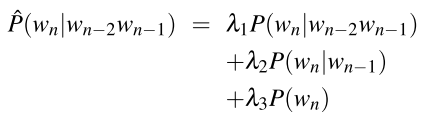
3.5 Kneser-Ney Smoothing
- Recall that discounting of the counts for frequent n-grams is necessary to save some probability mass for the smoothing algorithm to distribute to the unseen n-grams.
3.5.1 Absolute discounting
- Absolute discounting formalizes this intuition by subtracting a fixed (absolute) discount d from each count. The intuition is that since we have good estimates already for the very high counts, a small discount d won’t affect them much.
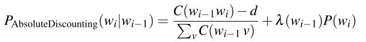
3.5.2 Kneser-Ney Smoothing
- $P_{CONTINUATION}$ unigram model
- base our estimate of unigram model on the number of different contexts word w has appeared in
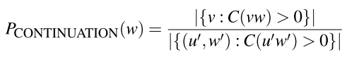
- The final equation for Interpolated Kneser-Ney smoothing for bigrams is then:
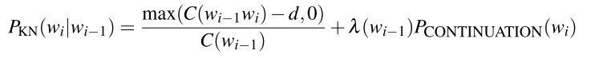
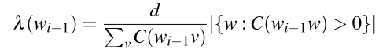
- The general recursive formulation is as follows:
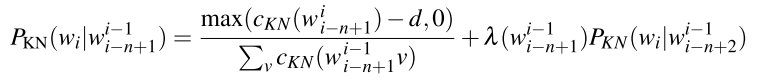
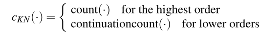